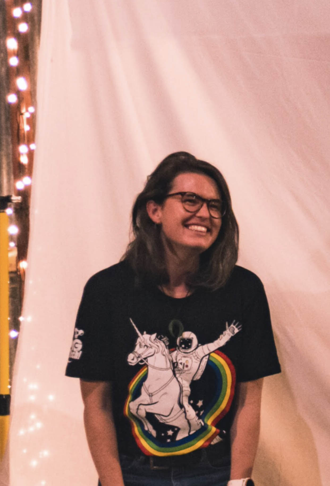

Kia ora!
Ko Felicity tōku ingoa

ABOUT
My current full-time role is Computer Science teacher at an urban low-decile school in Auckland, in my second year of the Ako Mātātupu: Teach First NZ Programme. Alongside teaching, I am a Master’s student, ultramarathoner, tech mentor, and Google Innovator.
More than all of this, I am a lifelong learner, which means that these titles can shift and change as needed by my community.
My current area of research is in educational neuroscience, studying the unlimited capacity of the human mind to innovate and identify creative solutions to complex challenges, particularly in disaster environments. I am particularly interested in the intersect of cognitive physiology, psychology, sociology, and technology, experimenting with how we can leverage machine learning to optimise workflow for teachers - so they can devote more of their time to building authentic and adaptive learning environments and relationships.
I also hack teenager’s brains using Rubber Ducks.
I am here to find as many ways I can to learn and love, bravely and wholeheartedly, while creating more opportunities for others to do the same. If you would like to connect or collaborate with me, please get in touch. I’d love to hear from you.
VALUES
CREATIVITY
I believe creative health and expression is an important contributor to wellbeing, and I aim to support humans around me to be inspired and fearless in their creative pursuits, no matter what their skills, talents, or resources.
CURIOSITY
Being lead by questions, wonder, and awe at the world around me keeps me in a state of constant transformation and humility. I am driven by the pursuit of self-development, betterment, and growth for the benefit of all.
HUMOUR
I believe we’re here for a good time, and (perhaps) a long time. Laughter boosts the immune system, builds trust, and helps us find perspective on the challenges we all face in our humanness and humanity.
LOVING-KINDNESS
Showing up for communities in a way that upholds dignity and integrity through actions as well as words. I aim to leave places, people, and projects better than I found them. Service is at the core of what I do, and is the manifestation of my hope for our future.
BACKGROUND
Born in New Zealand, I grew up between Aotearoa and the UK and have lived, worked, and traveled through 32 countries since, particularly Italy, Australia, the USA, France, and Scotland. My childhood exposed me directly to the difference that privilege can make in opportunity and survival, and imbued me with a strong inclination towards activism and social justice. With two technologists for parents, I also grew up learning about the exponential possibilities that technology can offer in transcending injustice and solving complex problems.
-
DON'T WORRY
Things take the time they take. Don't
worry.
How many roads did St. Augustine follow
before he became St. Augustine?Mary Oliver, 'Felicity'
It took me nearly 20 years to figure out the rest, and I'm still figuring it out. Along the way, my life has become dedicated to learning - and learning how to learn in the most adventurous and transformative ways possible. My studies have covered Computer Science, Film, Contemplative Education, Viticulture and Oenology, Geography, Urban Development, Disaster Risk Management, Astrophysics, GIS, Writing and Poetics, Religious Studies, Musicianship, Creative Technologies, and Sociology. I have completed postgraduate research in the field of Intellectual Property Law and Indigenous Rights, investigating the ramifications of the novel Geographical Indications Act on Aotearoa's viticultural, horticultural, agricultural, and cultural ecosystems.
I have worked as a WSET Advanced-Certified wine industry professional, Glacier Guide, croupier, and facilitator in Te Papa’s first cultural accelerator, Mahuki. I am a certified Yoga Teacher and studied Shaolin Kung Fu at a traditional martial arts academy in Henan Province, China.
I have been practising Vipassana meditation since I was 18, and volunteered for the Vipassana Foundation in Italy. I have also volunteered for Amnesty International and worked as a Policy and Research Analyst on a campaign investigating workers’ rights in the Middle East. I illustrated New Zealand’s largest comic strip and have published books and booklets on self-development and positive psychology. You can buy a recent collaboration here.
When I'm not tinkering, teaching, or advocating for techquity, I love to climb, hike, and run around and over things. I'm here for books, wine, and single malt whisky, and I experiment with raw photography and awkward poetry. If I'm not at my desk, you can find me in the wild or in the ocean.
EXPERIENCE
I have been fortunate to spend much of my time exploring the frontiers of my potential, through education, travel, work experience, and adventure.
-
2015
Notable Achievements
Founded RE:Edit Publishing
Raised $2000 for Community Disaster Relief organisations through the Road Cone Campaign
UC Centre for Entrepreneurship Summer Scholarship
Howard McNaughton Prize for Cultural Studies
Top 11 Social Enterprise, entre $85k Challenge
Published AddVenture Christchurch, which sold out of its first edition of 500 copies within 6 months
Graduated University of Canterbury with a Bachelor of Arts, Geography
UC Community Engagement Post-Disaster Recovery Project, Vanuatu, assisting local primary and secondary school teachers in establishing new computer infrastructure
-
2017
Notable Achievements:
UC Community Engagement work trip, Riverdale Country School, New York
Yoga Teacher Certification in Goa, India
Worked as a Franz Josef Glacier Guide, qualifying as a G4 Junior Guide
Initiated and completed Ōtautahi: An Origin Story, a public artwork collaboration between Matapopore, RE:Edit, and Otakaro Ltd - the artwork was installed December 2017 and will be in-situ until 2021.
-
2018
Notable Achievements
Trained in Shaolin Kung Fu at Yuntai Mountain School, Henan Province, China
Attended the London Book Fair, representing RE:Edit
Admitted with discretionary entry to the University of Auckland Law School, completing a Postgraduate Certificate in Law
Received First in Class honours for research essay, "Ignoble Rot? European Geographical Indications Taking Root in Aotearoa"
Began the Teach First NZ programme as a fellow in the 2019 Cohort
-
2019
Notable Achievements
Began teaching at Computer Science at secondary school level
Certified as a Google Educator, Levels Foundation (April) and Advanced (June)
Invited to become a Google Innovator in the SEA19 Cohort
Completed First Year, Teach First NZ
Completed Taught Courses, Master of Teaching and Educational Leadership, GPA 9.0
-
2020
Notable Achievements
Began 2nd Year of the Teach First NZ Programme
Became a mentor in the OMG!Tech Mana Tangata Programme
Received scholarship to complete NLP Certification in Wellington, NZ
CONTACT
I'm a fan of hot and cold beverages - let's get one and plan some mischief together. My name means happiness, and I believe that happiness is "realest" when shared and multiplied.